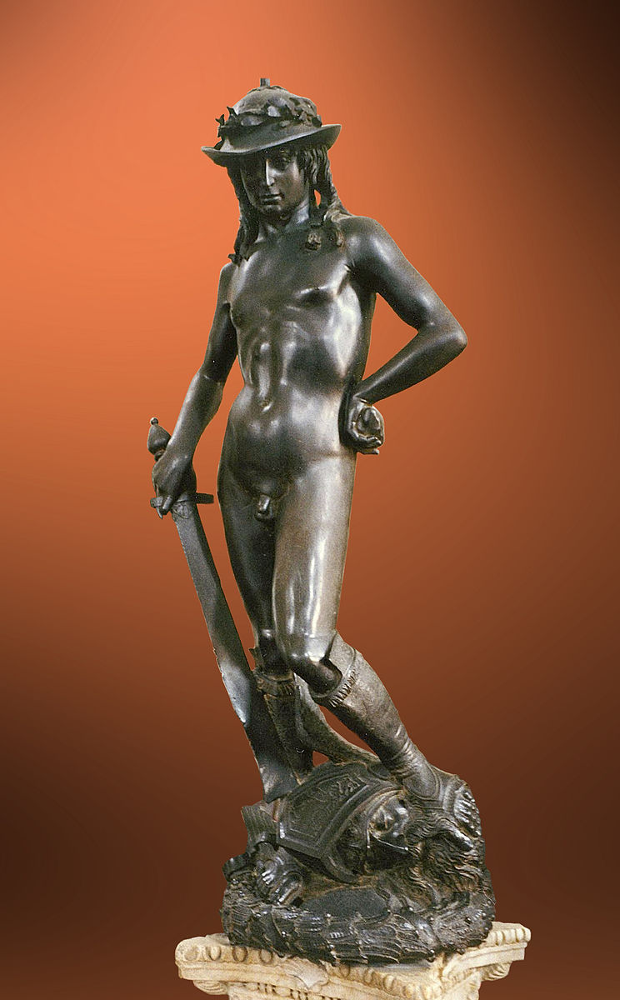
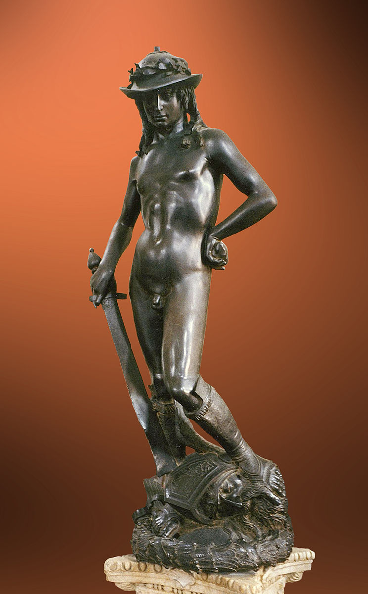

Langdon views the body of the murdered curator. Saunière's corpse splays spread-eagle on the floor in the form of a five-pointed shape called a pentacle. The pentacle is an ancient pagan religious symbol of nature worship and the "sacred feminine."
— Chapter 5, The Da Vinci Code

Born:14/15 April 1452, Vinci, Republic of Florence
Died:2 May 1519 (aged 67) Amboise, Kingdom of France
Known For:Art (painting, drawing, sculpting), science, engineering, architecture, anatomy
Movement:High Renaissance
“While Leonardo da Vinci is best known as an artist, his work as a scientist and an inventor make him a true Renaissance man. He serves as a role model applying the scientific method to every aspect of life, including art and music. Although he is best known for his dramatic and expressive artwork, Leonardo also conducted dozens of carefully thought out experiments and created futuristic inventions that were ground-breaking for the time.
Leonardo da Vinci trained as a painter during the Renaissance and became a true master of the craft.
During the Renaissance, European artists began to study nature more closely with the goal of painting realistic images of the world. These artists learned to create lifelike people and animals, and they became skilled at creating the illusion of depth and distance on flat walls and canvases by using the techniques of linear perspective.”


Born:6 March 1475, Caprese near Arezzo, Republic of Florence
Died:18 February 1564 (aged 88) Rome, Papal States
Known For:Sculpture, painting, architecture, and poetry
Movement:High Renaissance
Michelangelo di Lodovico Buonarroti Simoni or more commonly known by his first name Michelangelo (6 March 1475 – 18 February 1564) was an Italian sculptor, painter, architect and poet of the High Renaissance born in the Republic of Florence, who exerted an unparalleled influence on the development of Western art. Considered by many the greatest artist of his lifetime, and by some the greatest artist of all time, his artistic versatility was of such a high order that he is often considered a contender for the title of the archetypal Renaissance man, along with his rival, the fellow Florentine and client of the Medici, Leonardo da Vinci.
He was the first Western artist whose biography was published while he was alive.

.jpg)


Born:14/15 April 1452, Vinci, Republic of Florence
Died:April 6, 1520 (aged 37) Rome, Papal States
Known For:Painting, Architecture
Movement:High Renaissance
Raffaello Sanzio da Urbino, known as Raphael, was an Italian painter and architect of the High Renaissance. His work is admired for its clarity of form, ease of composition, and visual achievement of the Neoplatonic ideal of human grandeur. Together with Michelangelo and Leonardo da Vinci, he forms the traditional trinity of great masters of that period.
Raphael was enormously productive, running an unusually large workshop and, despite his death at 37, leaving a large body of work. Many of his works are found in the Vatican Palace, where the frescoed Raphael Rooms were the central, and the largest, work of his career. The best known work is The School of Athens.


Born:c. 1386 Republic of Florence
Died:13 December 1466 (aged 79 or 80) Republic of Florence
Known For:Sculpture
Movement:High Renaissance
Donatello would become known as the most important sculptor to resuscitate classical sculpture from its tomb in antiquity, through an invigorated style that departed from the Gothic period's flat iconography. He broke ground by introducing new aesthetics in line with the time's flourishing move toward Humanism - a movement that emphasized a departure from medieval scholasticism and favored deep immersion into the humanities, resulting in art that no longer focused solely on the secular realm of religion but explored man's place in the natural world.
Donatello's signature lifelike and highly emotional works would place him as one of the most influential artists in 15th century Italy, and an early forefather to the Italian.
 



Born:c. 1445 Florence, Republic of Florence
Died:May 17, 1510 (aged 64–65) Florence, Republic of Florence
Known For:Painting
Movement: Italian Renaissance
Sandro Botticelli, original name Alessandro di Mariano Filipepi, (born 1445, Florence [Italy]—died May 17, 1510, Florence), one of the greatest painters of the Florentine Renaissance. His The Birth of Venus and Primavera are often said to epitomize for modern viewers the spirit of the Renaissance
Botticelli worked in all the current genres of Florentine art. He painted altarpieces in fresco and on panel, tondi (round paintings), small panel pictures, and small devotional triptychs. His altarpieces include narrow vertical panels such as the St. Sebastian (1474); small oblong panels such as the famous Adoration of the Magi (c. 1476) from the Church of Santa Maria Novella; medium-sized altarpieces, of which the finest is the beautiful Bardi Altarpiece (1484–85); and large-scale works such as the St. Barnabas Altarpiece (c. 1488) and the Coronation of the Virgin (c. 1490). His early mastery of fresco is clearly visible in his St. Augustine (1480) in the Church of Ognissanti.
.jpg)